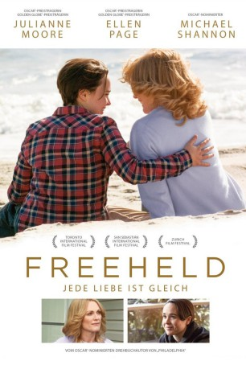
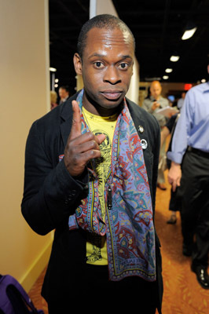

#3813 Freeheld: Jede Liebe ist gleich
Alternativ: Freeheld
 
 IMDB-Wertung: 6.5 / 10
IMDB-Wertung: 6.5 / 10  Metascore: 0
Metascore: 0 
Laurel Hesters (Julianne Moore) Welt bricht zusammen, als sie die Diagnose einer tödlichen Krankheit erhält: Lungenkrebs im Endstadium. Als Zeichen ihrer Liebe möchte die Polizeikommissarin ihre Pensionsansprüche auf ihre Lebensgefährtin, die Automechanikerin Stacie Andree (Ellen Page), überschreiben. Doch die Behörden stellen sich quer und agieren offen homophob. Ausgerechnet Laurels ehemaliger Kollege Dane Wells (Michael Shannon) wird zur treibenden Kraft in Laurels und Stacies Kampf um die ihnen zustehenden Rechte, obwohl ihn Laurels Enthüllung über ihre sexuelle Orientierung zunächst schockierte. Er und der Aktivist Steven Goldstein (Steve Carell) mobilisieren die Öffentlichkeit, um ihr Streben nach Gleichberechtigung nach Kräften zu unterstützen. Doch Laurels Zustand verschlechtert sich rapide und die Zeit wird knapp…
Jahr: 2015
Dauer: 103 Minuten
FSK: 6
Land: USA Studio: LionsgateTonspuren: DTS - ,
Untertitel:
Auflösung: 1080p (1920x1036) Größe: 7895 MB
Genre: Drama, Liebe, Biographie
Regisseur: Peter Sollett
Drehbuch: John Boyne
Soundtrack:
Darsteller:
 Julianne Moore als Laurel Hester
Julianne Moore als Laurel Hester Ellen Page als Stacie Andree
Ellen Page als Stacie Andree Michael Shannon als Dane Wells
Michael Shannon als Dane Wells Steve Carell als Steven Goldstein
Steve Carell als Steven Goldstein Luke Grimes als Todd Belkin
Luke Grimes als Todd Belkin- Gabriel Luna als Quesada
- Anthony DeSando als Toohey
 Skipp Sudduth als Chief Reynolds
Skipp Sudduth als Chief Reynolds Josh Charles als Bryan Kelder
Josh Charles als Bryan Kelder Kevin O'Rourke als Dan Wickery
Kevin O'Rourke als Dan Wickery Tom McGowan als William Johnson
Tom McGowan als William Johnson William Sadler als Peter Santucci
William Sadler als Peter Santucci Dennis Boutsikaris als Pat Gerrity
Dennis Boutsikaris als Pat Gerrity Adam LeFevre als Don Bennett
Adam LeFevre als Don Bennett- Jeannine Kaspar als Margaret
 Mary Birdsong als Carol Andree
Mary Birdsong als Carol Andree- Kelly Deadmon als Lynda Hester
- Traci Hovel als Hannah
- Mina Sundwall als Maya Kelder
-  Sahr Ngaujah als Father John
 Stink Fisher als Jake
Stink Fisher als Jake- Karl Jacob als Jeeter
- Jess Jacobs als Stacie's Team Member
 Suzanne Savoy als Town Clerk
Suzanne Savoy als Town Clerk Mary Joy als Estelle the Realtor
Mary Joy als Estelle the Realtor- Oliver Solomon als Security Guard
- Susan Merson als Harriet
 Scott Eliasoph als Protester , uncredited
Scott Eliasoph als Protester , uncredited- Matt Giroveanu als New Jersey State Policeman , uncredited
- Justine S. Harrison als Maggie , uncredited
 Rosemary Howard als Protestor , uncredited
Rosemary Howard als Protestor , uncredited- Melody Krell als Stacie's Teammate , uncredited
- Ice Aysun Leidl als Stacie's Teammate , uncredited
- Michael Metta als Frat Guy , uncredited
- Inna Muratova als Paradise Bar Patron , uncredited
- Chris Skeries als Protester , uncredited
- Guy Sparks als Bartender , uncredited
- Matthew Syrett als Honor Guard , uncredited
- Julie Reiber als Cat
- Portia Reiners als Christy Miller
- Tom Place als Driver of Jeep
- Robbie Tann als First Thug
- Henny Russell als Dr. Sarah Tonner
- Jessica Pressman als TV Reporter
- Joe Diomede als Derrick
- Dane B. Wells als Honor Guard
 Marmee Cosico als Gay Club Goer , uncredited
Marmee Cosico als Gay Club Goer , uncredited- Theodore John Forsi als Ocean City Detective , uncredited
- Paul A Nielsen als Ocean Co. Detective , uncredited
- Ron Rivera als Mechanic , uncredited
Datei: X:\2015(A-F)\Freeheld Jede Liebe ist gleich (2015, FSK6, 1920x1036).mkv seit 15.06.2016
Festplatte: HD 2015(A-Z)
 Es gibt insgesamt 143 Filme in der Gruppe '2015(A-F)'
Es gibt insgesamt 143 Filme in der Gruppe '2015(A-F)'